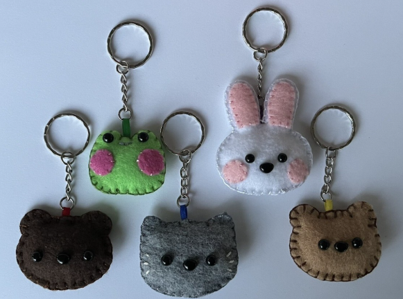

Felt Keychain Tutorial

These DIY felt keychains are really easy to make, completely customizable and so soft!
via Little DIY Projects
You'll need…
- Felt
- Needle & Thread
- Scissors
- Pencil
- Keychain & Jewelry rings
- Stuffing
Instructions
- Draw your design onto the felt. If you make a letter, make sure to draw it a bit broader than you want your final design to be. Fold the felt over so that your keychain has a front and back. Add any embroidery, beads, or otherdetails while the sides are apart.
- Sew along the lines of the design, making sure to keep a little gap. Then cut off the excess felt.
- To stuff your keyring, use stuffing, cotton or excess pieces of wool/fabric. You can choose to stuff it a lot or keep it a bit flat. After you've stuffed don't forget to sew the hole closed.
- Use a big needle to poke a hole in the fabric and insert a jewellery ring. Then you can attach the keyring to the jewellery ring.
- And that's it - now you have a felt keychain!